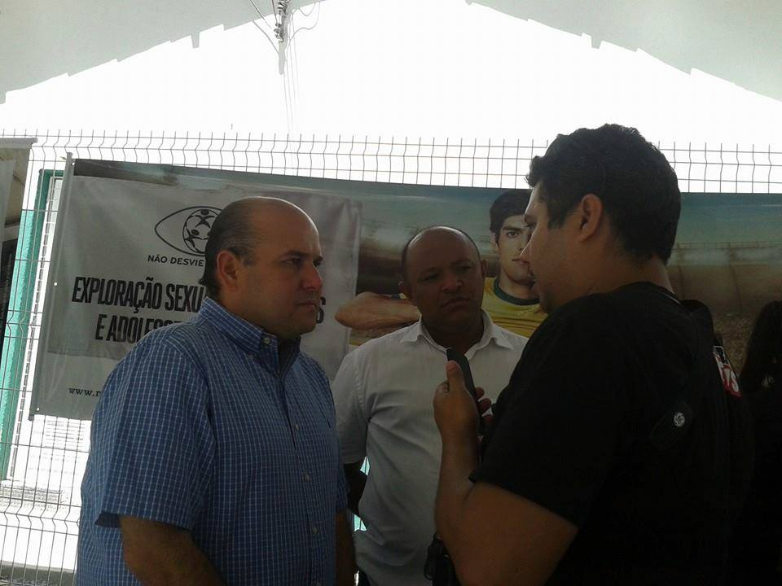

AO-FOTO-010 · INFÂNCIA E CIDADANIA
Registro relacionado ao Conselho Tutelar do Mucuripe
Fotografia preservada com referência de arquivo ao Conselho Tutelar do Mucuripe. O contexto institucional está identificado; o evento específico permanece em verificação.

PESQUISA ABERTA
Infância, proteção e território.
O registro passa a integrar o acervo sem atribuição de data ou identificação nominal de terceiros até que uma publicação contemporânea ou documento primário estabeleça o evento retratado.